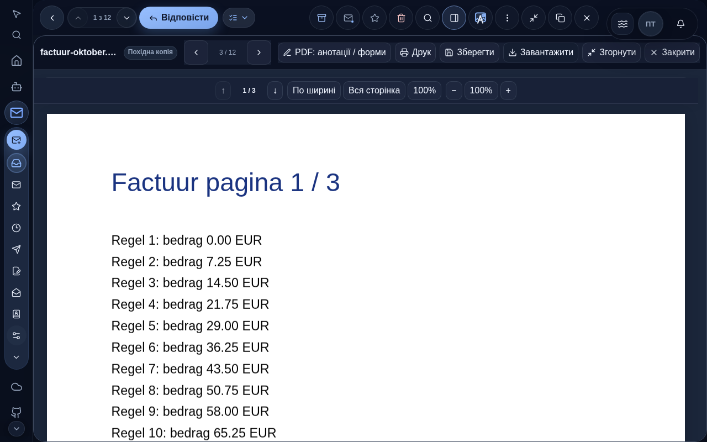
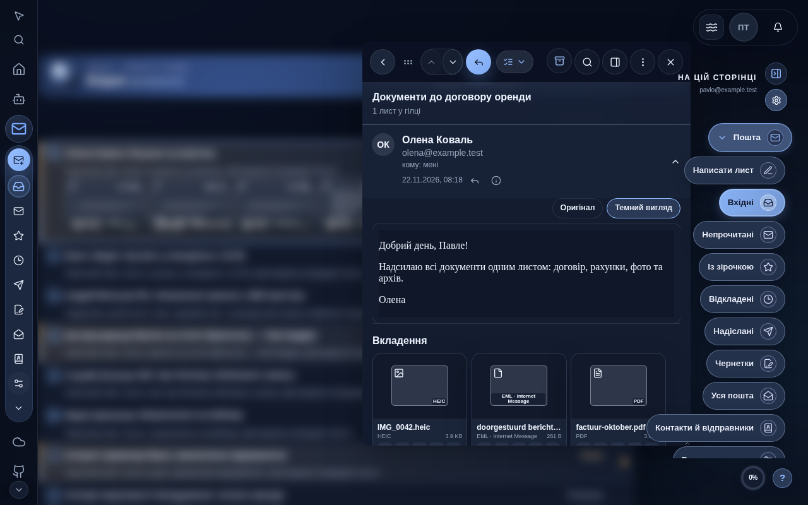
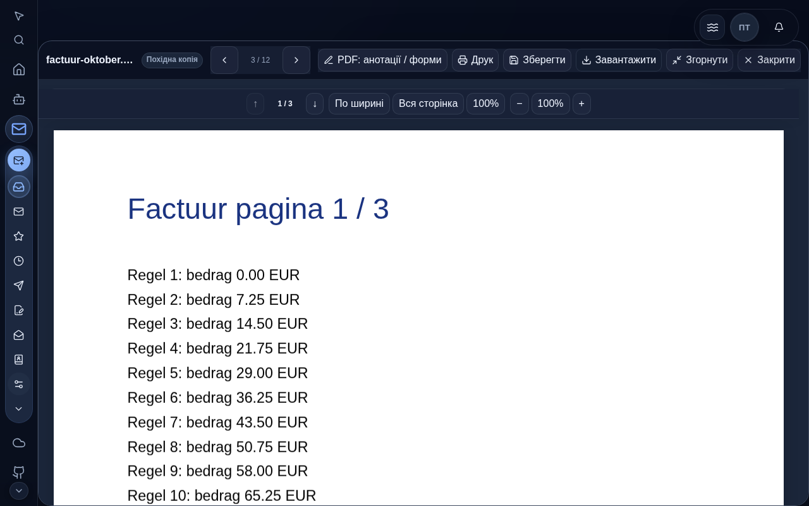
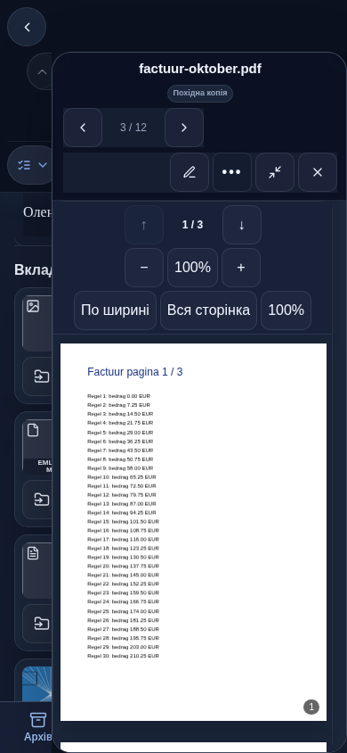
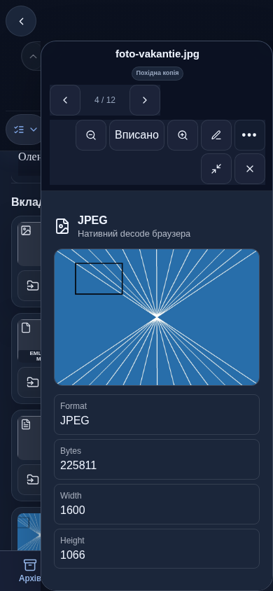
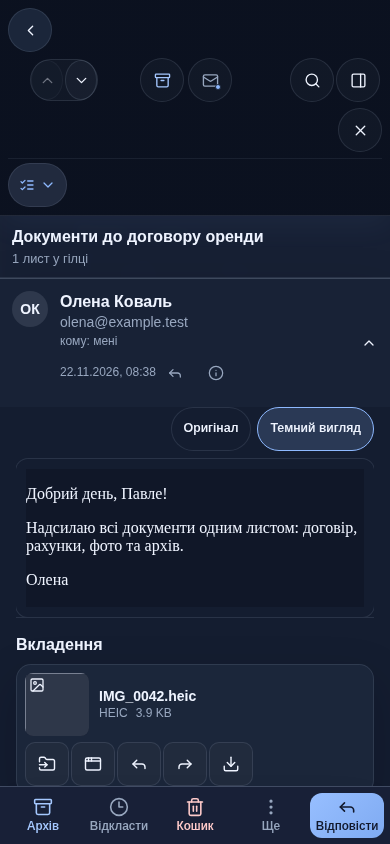

Ліворуч — справжній знімок поточного перегляду (тестовий стенд, прапорці вимкнено). Праворуч — концепція. Усі дані праворуч — приклад, вигадані.

Лист відкрито зменшеним вікном поверх пошти. Ліворуч — справжні знімки стенда, праворуч — концепція (приклад).


Ліворуч — справжні знімки стенда (прапорці вимкнено), праворуч — концепція (приклад), зокрема чесний стан помилки.


Ліворуч — справжній знімок стенда, праворуч — концепція (приклад).
